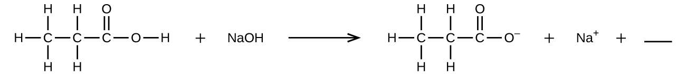
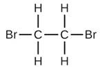
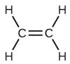
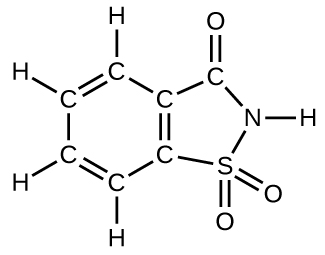
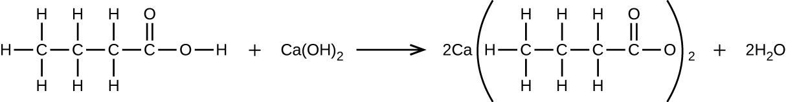

Preguntas y problemas - Capítulo IV
4.1 Escribiendo y equilibrando las ecuaciones químicas.
1. ¿Qué significa decir que una ecuación está equilibrada? ¿Por qué es importante que una ecuación esté equilibrada?
2 Considera las ecuaciones moleculares, iónicas completas y iónicas netas.
- ¿Cuál es la diferencia entre estos tipos de ecuaciones?
- ¿En qué circunstancias serían idénticas las ecuaciones iónicas completas y netas para una reacción?
3. Balancea las siguientes ecuaciones:
- PCl5 (s) + H2O (l) ⟶ OCPOCl3 (l) + HCl (ac)
- Cu (s) + HNO3 (ac) ⟶ Cu(NO3)2 (ac) + H2O (l) + NO (g)
- H2 (g) + I2 (s) → HI (s)
- Fe (s) + O2 (g) ⟶ Fe2O3 (s)
- Na (s) + H2O (l) ⟶ NaOH (ac) + H2 (g)
- (NH4)2Cr2O7 (s) ⟶ Cr2O3 (s) + N2 (g) + H2O (g)
- P4 (s) + Cl2 (g) ⟶ PCl3 (l)
- PtCl4 (s) ⟶ Pt (s) + Cl2 (g)
4. Equilibra las siguientes ecuaciones:
- Ag (s) + H2S (g) + O2 (g) ⟶ Ag2S (s) + H2O (l)
- P4 (s) + O2 (g) ⟶ P4O10 (s)
- Pb (s) + H2O (l) + O2 (g) ⟶ Pb(OH)2 (s)
- Fe (s) + H2O (l) ⟶ Fe3O4 (s) + H2 (g)
- Sc2O3 (s) + SO3 (l) ⟶ Sc2(SO4) 3 (s)
- Ca3(PO4)2 (ac) + H3PO4 (ac) ⟶ Ca(H2PO4)2 (ac)
- Al (s) + H2SO4 (ac) ⟶ Al2(SO4)3 (s) + H2 (g)
- TiCl4 (s) + H2O (g) ⟶ TiO2 (s) + HCl (g)
5. Escribe una ecuación molecular equilibrada que describa cada una de las siguientes reacciones químicas.
- El carbonato de calcio sólido se calienta y se descompone en óxido de calcio sólido y gas dióxido de carbono.
- El butano gaseoso, C4H10, reacciona con el gas de oxígeno diatómico para producir dióxido de carbono gaseoso y vapor de agua.
- Las soluciones acuosas de cloruro de magnesio e hidróxido de sodio reaccionan para producir hidróxido de magnesio sólido y cloruro de sodio acuoso.
- El vapor de agua reacciona con el metal de sodio para producir hidróxido de sodio sólido y gas de hidrógeno.
6. Escribe una ecuación balanceada que describa cada una de las siguientes reacciones químicas.
- El clorato de potasio sólido, KClO3, se descompone para formar cloruro de potasio sólido y gas de oxígeno diatómico.
- El metal sólido de aluminio reacciona con el yodo diatómico sólido para formar Al2I6 sólido.
- Cuando se agrega cloruro de sodio sólido al ácido sulfúrico acuoso, se producen gas de cloruro de hidrógeno y sulfato de sodio acuoso.
- Las soluciones acuosas de ácido fosfórico e hidróxido de potasio reaccionan para producir dihidrógeno fosfato de potasio acuoso y agua líquida.
7. Los coloridos fuegos artificiales a menudo implican la descomposición del nitrato de bario y el clorato de potasio y la reacción de los metales magnesio, aluminio y hierro con oxígeno.
- Escriba las fórmulas de nitrato de bario y clorato de potasio.
- La descomposición del clorato de potasio sólido conduce a la formación de cloruro de potasio sólido y gas de oxígeno diatómico. Escribe una ecuación para la reacción.
- La descomposición del nitrato de bario sólido conduce a la formación de óxido de bario sólido, gas de nitrógeno diatómico y gas de oxígeno diatómico. Escribe una ecuación para la reacción.
- Escriba ecuaciones separadas para las reacciones de los metales sólidos magnesio, aluminio y hierro con gas de oxígeno diatómico para obtener los óxidos metálicos correspondientes. (Supongamos que el óxido de hierro contiene iones Fe3+).
8. Rellena el espacio en blanco con una sola fórmula química para un compuesto covalente que equilibrará la ecuación:

9. El fluoruro de hidrógeno acuoso (ácido fluorhídrico) se utiliza para grabar vidrio y analizar los minerales para determinar su contenido de silicio. El fluoruro de hidrógeno también reaccionará con la arena (dióxido de silicio).
- Escriba una ecuación para la reacción del dióxido de silicio sólido con ácido fluorhídrico para producir tetrafluoruro de silicio gaseoso y agua líquida.
- La fluorita mineral (fluoruro de calcio) se encuentra ampliamente en Illinois. El fluoruro de calcio sólido también se puede preparar mediante la reacción de soluciones acuosas de cloruro de calcio y fluoruro de sodio, produciendo cloruro de sodio acuoso como el otro producto. Escribe ecuaciones iónicas completas y netas para esta reacción.
10. Un nuevo proceso para obtener magnesio a partir de agua de mar implica varias reacciones. Escribe una ecuación química equilibrada para cada paso del proceso.
- El primer paso es la descomposición del carbonato de calcio sólido de las conchas marinas para formar un sólido
- El segundo paso es la formación de hidróxido de calcio sólido como el único producto de la reacción del óxido de calcio sólido con agua líquida.
- Luego se agrega hidróxido de calcio sólido al agua de mar, reaccionando con cloruro de magnesio disuelto para producir hidróxido de magnesio sólido y cloruro de calcio acuoso.
- El hidróxido de magnesio sólido se agrega a una solución de ácido clorhídrico, produciendo cloruro de magnesio disuelto y agua líquida.
- Finalmente, el cloruro de magnesio se funde y se electroliza para producir un metal de magnesio líquido y un gas de cloro diatómico.
11. De las ecuaciones moleculares balanceadas, escriba las ecuaciones iónicas netas y netas completas para lo siguiente:
- K2C2O4 (ac) + Ba(OH)2 (ac) ⟶ 2KOH (ac) + BaC2O4 (s)
- Pb(NO3)2 (ac) + H2SO4 (ac) ⟶ PbSO4 (s) + 2HNO3 (ac)
- CaCO3 (s) + H2SO4 (ac) ⟶ CaSO4 (s) + CO2 (g) + H2O (l)
4.2 Clasificación de las reacciones químicas
12. Usa las siguientes ecuaciones para responder las siguientes cuatro preguntas:
- H2O (s) ⟶ H2O (l)
- Na+(ac) + Cl−(ac) + Ag+(ac) + NO3 (ac)- ⟶ AgCl (s) + Na+(ac) + NO3 (ac)-
- CH3OH (g) + O2 (g) ⟶ CO2 (g) + H2O (g)
- 2H2O (l) ⟶ 2H2 (g) + O2 (g)
- H+(ac) + OH−(ac) ⟶ H2O (l)
- ¿Qué ecuación describe un cambio físico?
- ¿Qué ecuación identifica los reactivos y productos de una reacción de combustión?
- ¿Qué ecuación no está balanceada?
- ¿Cuál es una ecuación iónica neta?
13. Indica qué tipo o tipos de reacción representa cada uno de los siguientes:
- Ca (s) + Br2 (l) ⟶ CaBr2 (s)
- Ca(OH)2 (ac) + 2HBr (ac) ⟶ CaBr2 (ac) + 2H2O (l)
- C6H12 (l) + 9O2 (g) ⟶ 6CO2 (g) + 6H2O (g)
14. Indica qué tipo o tipos de reacción representa cada uno de los siguientes:
- H2O (g) + C (s) ⟶ CO (g) + H2 (g)
- 2KClO3 (s) ⟶ 2KCl (s) + 3O2 (g)
- Al(OH)3 (ac) + 3HCl (ac) ⟶ AlCl3 (ac) + 3H2O (l)
- Pb (NO3)2 (ac) + H2SO4 (ac) ⟶ PbSO4 (s) + 2HNO3 (ac)
15. La plata se puede separar del oro porque la plata se disuelve en ácido nítrico, mientras que el oro no lo hace. ¿La disolución de la plata en ácido nítrico es una reacción ácido-base o una reacción de oxidación-reducción? Explica tu respuesta.
16. Determina los estados de oxidación de los elementos en los siguientes compuestos:
- NaI
- GdCl3
- LiNO3
- H2Se
- Mg2Si
- RbO2, superóxido de rubidio
- HF
17. Determina los estados de oxidación de los elementos en los compuestos enumerados. Ninguno de los compuestos que contienen oxígeno son peróxidos o superoxidos.
- H3PO4
- Al(OH)3
- SeO2
- KNO2
- In2S3
- P4O6
18. Determina los estados de oxidación de los elementos en los compuestos enumerados. Ninguno de los compuestos que contienen oxígeno son peróxidos o superoxidos.
- H2SO4
- Ca(OH)2
- BrOH
- ClNO2
- TiCl4
- NaH
19. Clasifica lo siguiente como reacciones ácido-base o reacciones de oxidación-reducción:
- Na2S (ac) + 2HCl (ac) ⟶ 2NaCl (ac) + H2S (g)
- 2Na (s) + 2HCl (ac) ⟶ 2NaCl (ac) + H2 (g)
- Mg (s) + Cl2 (g) ⟶ MgCl2 (s)
- MgO (s) + 2HCl (ac) ⟶ MgCl2 (ac) + H2O (l)
- K3P (s) + 2O2 (g) ⟶ K3PO4 (s)
- 3KOH (ac) + H3PO4 (ac) ⟶ K3PO4 (ac) + 3H2O (l)
20. Identifica los átomos que se oxidan y reducen, el cambio en el estado de oxidación de cada uno, y los agentes oxidantes y reductores en cada una de las siguientes ecuaciones:
- Mg (s) + NiCl2 (ac) ⟶ MgCl2 (ac) + Ni (s)
- PCl3 (l) + Cl2 (g) ⟶ PCl5 (s)
- C2H4 (g) + 3O2 (g) ⟶ 2CO2 (g) + 2H2O (g)
- Zn (s) + H2SO4 (ac) ⟶ ZnSO4 (ac) + H2 (g)
- 2K2S2O3 (s) + I2 (s) ⟶ K2S4O6 (s) + 2KI (s)
- 3Cu (s) + 8HNO3 (ac) ⟶ 3Cu(NO3)2 (ac) + 2NO (g) + 4H2O (l)
21. Completa y equilibra las siguientes ecuaciones ácido-base:
- El gas HCl reacciona con el Ca(OH)2 (s) sólido.
- Se agrega una solución de Sr(OH)2 a una solución de HNO3.
22. Completa y equilibra las siguientes ecuaciones ácido-base:
- Se agrega una solución de HClO4 a una solución de LiOH.
- El H2SO4 acuoso reacciona con NaOH.
- Ba(OH)2 reacciona con el gas HF.
23. Completa y equilibra las siguientes reacciones de oxidación-reducción, que dan el estado de oxidación más alto posible para los átomos oxidados.
- Al (s) + F2 (g) ⟶
- Al (s) + CuBr2 (ac) ⟶ (desplazamiento simple)
- P4 (s) + O2 (g) ⟶
- Ca (s) + H2O (l) ⟶ (los productos son una base fuerte y un gas diatómico)
24. Completa y equilibra las siguientes reacciones de oxidación-reducción, que dan el estado de oxidación más alto posible para los átomos oxidados.
- K (s) + H2O (l) ⟶
- Ba (s) + HBr (ac) ⟶
- Sn (s) + I2 (s) ⟶
25. Completa y equilibra las ecuaciones para las siguientes reacciones de neutralización ácido-base. Si se usa agua como solvente, escriba los reactivos y productos como iones acuosos. En algunos casos, puede haber más de una respuesta correcta, dependiendo de las cantidades de reactivos utilizados.
- Mg(OH)2 (s) + HClO4 (ac) ⟶
- SO3 (g) + H2O (l) ⟶ (suponga un exceso de agua y que el producto se disuelve)
- SrO (s) + H2SO4 (l) ⟶
26. Cuando se calientan a 700–800 ° C, los diamantes, que son carbono puro, se oxidan con el oxígeno atmosférico. (¡Queman!) Escribe la ecuación balanceada para esta reacción.
27. El ejército ha experimentado con láseres que producen una luz muy intensa cuando el flúor se combina explosivamente con el hidrógeno. ¿Cuál es la ecuación balanceada para esta reacción?
28. Escribe las ecuaciones moleculares, iónicas totales y iónicas netas para las siguientes reacciones:
- Ca(OH)2 (ac) + HC2H3O2 (ac) ⟶
- H3PO4 (ac) + CaCl2 (ac) ⟶
29. Great Lakes Chemical Company produce bromo, Br2, a partir de sales de bromuro como NaBr, en salmuera de Arkansas al tratar la salmuera con gas de cloro. Escribe una ecuación balanceada para la reacción de NaBr con Cl2.
30. En un experimento común en el laboratorio de química general, el magnesio metálico se calienta en el aire para producir MgO. El MgO es un sólido blanco, pero en estos experimentos a menudo se ve gris, debido a pequeñas cantidades de Mg3N2, un compuesto formado cuando parte del magnesio reacciona con el nitrógeno. Escribe una ecuación balanceada para cada reacción.
31. El hidróxido de litio se puede usar para absorber dióxido de carbono en ambientes cerrados, como naves espaciales tripuladas y submarinos. Escribe una ecuación para la reacción que involucre 2 mol de LiOH por 1 mol de CO2. (Pista: El agua es uno de los productos).
32 El propionato de calcio a veces se agrega al pan para retardar el deterioro. Este compuesto puede prepararse mediante la reacción de carbonato de calcio, CaCO3, con ácido propiónico, C2H5CO2H, que tiene propiedades similares a las del ácido acético. Escribe la ecuación balanceada para la formación de propionato de calcio.
33. Complete y equilibre las ecuaciones de las siguientes reacciones, cada una de las cuales podría usarse para eliminar el sulfuro de hidrógeno del gas natural:
- Ca(OH)2 (s) + H2S (g) ⟶
- Na2CO3 (ac) + H2S (g) ⟶
34. El sulfuro de cobre (II) es oxidado por el oxígeno molecular para producir trióxido de azufre gaseoso y óxido de cobre (II) sólido. El producto gaseoso reacciona entonces con agua líquida para producir sulfato de hidrógeno líquido como el único producto. Escribe las dos ecuaciones que representan estas reacciones.
35. Escribe ecuaciones químicas balanceadas para las reacciones utilizadas para preparar cada uno de los siguientes compuestos a partir de los materiales de partida dados. En algunos casos, pueden requerirse reactivos adicionales.
- nitrato de amonio sólido del nitrógeno molecular gaseoso a través de un proceso de dos pasos (primero reduzca el nitrógeno a amoníaco, luego neutralice el amoníaco con un ácido apropiado)
- bromuro de hidrógeno gaseoso de bromo molecular líquido a través de una reacción redox de un paso
- H2S gaseoso del Zn y S sólidos mediante un proceso de dos pasos (primero una reacción redox entre los materiales de partida, luego la reacción del producto con un ácido fuerte)
36. El ciclamato de calcio Ca(C6H11NHSO3)2 es un edulcorante artificial que se usa en muchos países del mundo, pero está prohibido en los Estados Unidos. Puede purificarse industrialmente convirtiéndola en la sal de bario a través de la reacción del ácido C6H11NHSO3H con carbonato de bario, el tratamiento con ácido sulfúrico (sulfato de bario es muy insoluble) y luego la neutralización con hidróxido de calcio. Escribe las ecuaciones balanceadas para estas reacciones.
37. Completa y equilibra cada una de las siguientes medias reacciones (pasos 2 a 5 en el método de media reacción):
- Sn4+(ac) ⟶ Sn2+(ac)
- [Ag(NH3)2]+(ac) ⟶ Ag (s) + NH3 (ac)
- Hg2Cl2 (s) ⟶ Hg (l) + Cl−(ac)
- H2O (l) ⟶ O2 (g) (en solución ácida)
- IO3 (ac)- ⟶ I2 (s)
- SO3 (ac)2- ⟶ SO4 (ac)2- (en solución ácida)
- MnO4 (ac)- ⟶ Mn2+(ac) (en solución ácida)
- Cl-(ac) ⟶ ClO3 (ac)- (en solución básica)
38. Completa y equilibra cada una de las siguientes reacciones medias (pasos 2 a 5 en el método de reacción media):
- Cr2+(ac) ⟶ Cr3+(ac)
- Hg (l) + Br−(ac) ⟶ HgBr2-4 (ac)
- ZnS (s) ⟶ Zn (s) + S2−(ac)
- H2 (g) ⟶ H2O (l) (en solución básica)
- H2 (g) ⟶ H3O+(ac) (en solución ácida)
- NO3 (ac)− ⟶ HNO2 (aq) (en solución ácida)
- MnO2 (s) ⟶ MnO-4 (ac) (en solución básica)
- Cl−(ac) ⟶ ClO-3 (ac) (en solución ácida)
39. Equilibra cada una de las siguientes ecuaciones de acuerdo con el método de media reacción:
- Sn2+(ac) + Cu2+(ac) ⟶ Sn4+(ac) + Cu+(ac)
- H2S (g) + Hg2+2 (ac) ⟶ Hg (l) + S (s) (en ácido)
- CN−(ac) + ClO2 (ac) ⟶ CNO−(ac) + Cl−(ac) (en ácido)
- Fe2+(ac) + Ce4+(ac) ⟶ Fe3+(ac) + Ce3+(ac)
- HBrO (ac) ⟶ Br−(ac) + O2 (g) (en ácido)
40. Equilibra cada una de las siguientes ecuaciones de acuerdo con el método de media reacción:
- Zn (s) + NO3 (ac)− ⟶ Zn2+(ac) + N2 (g) (en ácido)
- Zn (s) + NO3 (ac)− ⟶ Zn2+(ac) + NH3 (ac) (en la base)
- CuS (s) + NO3 (ac)− ⟶ Cu2+(ac) + S (s) + NO (g) (en ácido)
- NH3 (ac) + O2 (g) ⟶ NO2 (g) (fase gaseosa)
- H2O2 (ac) + MnO4 (ac)− ⟶ Mn2+(ac) + O2 (g) (en ácido)
- NO2 (g) ⟶ NO3 (ac)− + NO2 (ac)− (en la base)
- Fe3+(ac) + I−(ac) ⟶ Fe2+(ac) + I2 (ac)
41. Equilibre cada una de las siguientes ecuaciones de acuerdo con el método de media reacción:
- Mn4 (ac)− + NO2 (ac)− ⟶ MnO2 (s) + NO3 (ac)− (en la base)
- MnO4 (ac)2− ⟶ MnO4 (ac)− + MnO2 (s) (en la base)
- Br2 (l) + SO2 (g) ⟶ Br−(ac) + SO4 (ac)2− (en ácido)
4.3 Estequiometría de reacción
42. Escriba la ecuación balanceada, luego describa los pasos necesarios para determinar la información solicitada en cada uno de los siguientes:
- El número de moles y la masa de cloro, Cl2, requerido para reaccionar con 10.0 g de sodio metal, Na, para producir cloruro de sodio, NaCl.
- El número de moles y la masa de oxígeno formada por la descomposición de 1.252 g de óxido de mercurio (II).
- El número de moles y la masa de nitrato de sodio, NaNO3, necesarios para producir 128 g de oxígeno. (NaNO2 es el otro producto.)
- El número de moles y la masa de dióxido de carbono formado por la combustión de 20.0 kg de carbono en un exceso de oxígeno.
- La cantidad de moles y la masa de carbonato de cobre (II) necesaria para producir 1.500 kg de óxido de cobre (II). (CO2 es el otro producto.)
- El número de moles y la masa de  formada por la reacción de 12.85 g de  con un exceso de Br2.
43. Determina el número de moles y la masa solicitada para cada reacción en el Ejercicio 4.42.
44. Escriba la ecuación balanceada, luego describa los pasos necesarios para determinar la información solicitada en cada uno de los siguientes:
- La cantidad de moles y la masa de Mg requerida para reaccionar con 5.00 g de HCl y producir MgCl2 y H2.
- El número de moles y la masa de oxígeno formada por la descomposición de 1.252 g de óxido de plata (I).
- El número de moles y la masa de carbonato de magnesio, MgCO3, requerido para producir 283 g de dióxido de carbono. (MgO es el otro producto.)
- El número de moles y la masa de agua formada por la combustión de 20.0 kg de acetileno, C2H2, en un exceso de oxígeno.
- La cantidad de moles y la masa de peróxido de bario, BaO2, necesaria para producir 2.500 kg de óxido de bario, BaO (el otro producto es O2).
- "El número de moles y la masa de se requiere que reaccione con el H2O para producir 9,55 g de
 .
.
45. Determine el número de moles y la masa solicitada para cada reacción en el Ejercicio 4.44.
46 El H2 se produce por la reacción de 118.5 mL de una solución 0.8775-M de H3PO4 de acuerdo con la siguiente ecuación:
2Cr + 2H3PO4 ⟶ 3H2 + 2CrPO4.
- Resuma los pasos necesarios para determinar el número de moles y la masa de H2.
- Realizar los cálculos descritos.
47. El cloruro de galio se forma por la reacción de 2.6 L de una solución de HCl 1.44 M de acuerdo con la siguiente ecuación:
2Ga + 6HCl ⟶ 2GaCl3 + 3H2.
- Resuma los pasos necesarios para determinar el número de moles y la masa de cloruro de galio.
- Realizar los cálculos descritos.
48. I2 se produce por la reacción de 0,4235 moles de CuCl2 de acuerdo con la siguiente ecuación:
2CuCl2 + 4KI ⟶ 2CuI + 4KCl + I2.
- ¿Cuántas moléculas de I2 se producen?
- ¿Qué masa de I2 se produce?
49. La plata se extrae a menudo de minerales como K[Ag(CN)2] y luego se recupera por reacción.
2K[Ag(CN)2] (ac) + Zn (s) ⟶ 2Ag (s) + Zn(CN)2 (ac) + 2KCN (ac)
- ¿Cuántas moléculas de Zn(CN)2 se producen por la reacción de 35.27 g de K[Ag(CN)2]?
- ¿Qué masa de Zn(CN)2 se produce?
50. ¿Qué masa de óxido de plata, Ag2O, se requiere para producir 25.0 g de sulfadiazina de plata, AgC10H9N4SO2, a partir de la reacción del óxido de plata y la sulfadiazina?
2C10H10N4SO2 + Ag2O ⟶ 2AgC10H9N4SO2 + H2O
51. El carborundum es carburo de silicio, SiC, un material muy duro utilizado como abrasivo en papel de lija y en otras aplicaciones. Se prepara mediante la reacción de arena pura, SiO2, con carbono a alta temperatura. El monóxido de carbono, CO, es el otro producto de esta reacción. Escriba la ecuación balanceada para la reacción y calcule cuánto SiO2 se requiere para producir 3.00 kg de SiC.
52. Las bolsas de aire de los automóviles se inflan cuando una muestra de azida de sodio, NaN3, se descompone muy rápidamente.
2NaN3 (s) ⟶ 2Na (s) + 3N2 (g)
¿Qué masa de azida de sodio se requiere para producir 2.6 pies3 (73.6 L) de gas nitrógeno con una densidad de 1.25 g/L?
53. La urea, CO(NH2)2, se fabrica a gran escala para su uso en la producción de plásticos de urea-formaldehído y como fertilizante. ¿Cuál es la masa máxima de urea que se puede fabricar a partir del CO2 producido por la combustión de 1.00×103kg de carbono seguido de la reacción?
CO2 (g) + 2NH3 (g) ⟶ CO(NH2)2 (s) + H2O (l)
54. En un accidente, se derramó una solución que contenía 2,5 kg de ácido nítrico. Dos kilogramos de Na2CO3 se extendieron rápidamente en el área y la reacción liberó CO2. ¿Se usó suficiente Na2CO3 para neutralizar todo el ácido?
55. Un auto compacto obtiene 37.5 millas por galón en la carretera. Si la gasolina contiene 84.2% de carbono en masa y tiene una densidad de 0.8205 g/ml, determine la masa de dióxido de carbono producido durante un viaje de 500 millas (3.785 litros por galón).
56. ¿Qué volumen de solución de ácido clorhídrico 0.750 M se puede preparar a partir del HCl producido por la reacción de 25.0 g de NaCl con exceso de ácido sulfúrico?
NaCl (s) + H2SO4 (l) ⟶ HCl (g) + NaHSO4 (s)
57. ¿Qué volumen de una solución de KI 0.2089 M contiene suficiente KI para reaccionar exactamente con el Cu(NO3)2 en 43.88 ml de una solución de Cu(NO3)2 0.3842 M?
2Cu(NO3)2 + 4KI ⟶ 2CuI + I2 + 4KNO3
58. Un mordiente es una sustancia que se combina con un tinte para producir un color fijo estable en un tejido teñido. El acetato de calcio se utiliza como un mordiente. Se prepara por reacción del ácido acético con hidróxido de calcio.
2CH3CO2H + Ca(OH)2 ⟶ Ca(CH3CO2)2 + 2H2O
¿Qué masa de Ca(OH)2 se requiere para reaccionar con el ácido acético en 25.0 mL de una solución que tiene una densidad de 1.065 g/mL y que contiene 58.0% de ácido acético en masa?
59. El pigmento tóxico llamado plomo blanco, Pb3(OH)2(CO3)2, ha sido reemplazado en pinturas blancas por rutilo, TiO2. ¿Cuánto rutilo (g) se puede preparar a partir de 379 g de un mineral que contiene 88,3% de ilmenita (FeTiO3) en masa?
2FeTiO3 + 4HCl + Cl2 ⟶ 2FeCl3 + 2TiO2 + 2H2O
4.4 Rendimientos de reacción
60. Las siguientes cantidades se colocan en un recipiente: 1.5×1024 átomos de hidrógeno, 1.0 mol de azufre y 88.0 g de oxígeno diatómico.
- ¿Cuál es la masa total en gramos para la colección de los tres elementos?
- ¿Cuál es el número total de moles de átomos para los tres elementos?
- Si la mezcla de los tres elementos formó un compuesto con moléculas que contienen dos átomos de hidrógeno, un átomo de azufre y cuatro átomos de oxígeno, ¿qué sustancia se consume primero?
- ¿Cuántos átomos de cada elemento restante permanecerían sin reaccionar en el cambio descrito en (c)?
61. ¿Cuál es el reactivo limitante en una reacción que produce cloruro de sodio a partir de 8 g de sodio y 8 g de cloro diatómico?
62. ¿Cuál de los postulados de la teoría atómica de Dalton explica por qué podemos calcular el rendimiento teórico de una reacción química?
63. Un estudiante aisló 25 g de un compuesto siguiendo un procedimiento que teóricamente arrojaría 81 g. ¿Cuál fue su porcentaje de rendimiento?
64. Se obtuvo una muestra de 0.53 g de dióxido de carbono calentando 1.31 g de carbonato de calcio. ¿Cuál es el porcentaje de rendimiento para esta reacción?
CaCO3 (s) ⟶ CaO (s) + CO2 (s)
65. El freón-12, CCl2F2, se prepara a partir de CCl4 por reacción con HF. El otro producto de esta reacción es HCl. Resuma los pasos necesarios para determinar el porcentaje de rendimiento de una reacción que produce 12.5 g de CCl2F2 a partir de 32.9 g de CCl4. El freón-12 ha sido prohibido y ya no se usa como refrigerante porque cataliza la descomposición del ozono y tiene una vida útil muy larga en la atmósfera. Determine el porcentaje de rendimiento.
66. El ácido cítrico, C6H8O7, un componente de las mermeladas, jaleas y refrescos con sabor a fruta, se prepara industrialmente a través de la fermentación de la sacarosa por el molde Aspergillus niger. La ecuación que representa esta reacción es
C12H22O11 + H2O + 3O2 ⟶ 2C6H8O7 + 4H2O
¿Qué masa de ácido cítrico se produce a partir de exactamente 1 tonelada métrica (1.000×103 kg) de sacarosa si el rendimiento es del 92,30%?
67. El tolueno, C6H5CH3, se oxida por aire en condiciones cuidadosamente controladas a ácido benzoico, C6H5CO2H, que se usa para preparar el conservante de alimentos benzoato de sodio, C6H5CO2Na. ¿Cuál es el porcentaje de rendimiento de una reacción que convierte 1.000 kg de tolueno en 1.21 kg de ácido benzoico?
2C6H5CH3 + 3O2 ⟶ 2C6H5CO2H + 2H2O
68. En un experimento de laboratorio, la reacción de 3.0 mol de H2 con 2.0 mol de I2 produjo 1.0 mol de HI. Determine el rendimiento teórico en gramos y el porcentaje de rendimiento para esta reacción.
69. Resuma los pasos necesarios para resolver el siguiente problema, luego haga los cálculos. El éter, (C2H5)2O, que originalmente se usó como anestésico pero que fue reemplazado por medicamentos más seguros y efectivos, se prepara mediante la reacción del etanol con ácido sulfúrico.
2C2H5OH + H2SO4 ⟶ (C2H5)2O + H2SO4·H2O
¿Cuál es el rendimiento porcentual de éter si se aíslan 1.17 L (d = 0.7134 g/mL) de la reacción de 1.500 L de C2H5OH?(d = 0.7894 g/mL)?
70. Resume los pasos necesarios para determinar el reactivo limitante cuando se queman 30.0 g de propano, C3H8, con 75.0 g de oxígeno. Determine el reactivo limitante.
71. Resuma los pasos necesarios para determinar el reactivo limitante cuando 0.50 mol de Cr y 0.75 mol de H3PO4 reaccionan de acuerdo con la siguiente ecuación química.
2Cr + 2H3PO4 ⟶ 2CrPO4 + 3H2
Determine el reactivo limitante.
72. ¿Cuál es el reactivo limitante cuando 1.50 g de litio y 1.50 g de nitrógeno se combinan para formar nitruro de litio, un componente de las baterías avanzadas, de acuerdo con la siguiente ecuación desequilibrada?
Li + N2 ⟶ Li3N
73. El uranio se puede aislar de sus minerales disolviéndolo como UO2(NO3)2, y luego separándolo como sólido UO2(C2O4)·3H2O. La adición de 0.4031 g de oxalato de sodio, Na2C2O4, a una solución que contiene 1.481 g de nitrato de uranilo, UO2(NO3)2, produce 1.073 g de UO2 sólido (C2O4)·3H2O.
Na2C2O4 + UO2(NO3)2 + 3H2O ⟶ UO2(C2O4)·3H2O + 2NaNO3
Determine el reactivo limitante y el porcentaje de rendimiento de esta reacción.
74. ¿Cuántas moléculas de C2H4Cl2 se pueden preparar a partir de 15 moléculas de C2H4 y 8 moléculas de Cl2?
75. ¿Cuántas moléculas del edulcorante sacarina pueden prepararse a partir de 30 átomos de C, 25 átomos de H, 12 átomos de O, 8 átomos de S y 14 átomos de N?

76. El pentóxido de fósforo utilizado para producir ácido fosfórico para refrescos de cola se prepara quemando fósforo en oxígeno.
- ¿Cuál es el reactivo limitante cuando 0.200 mol de P4 y 0.200 mol de O2 reaccionan de acuerdo con P4 + 5O2 ⟶ P4O10
- Calcule el porcentaje de rendimiento si se aíslan 10,0 g de P4O10 de la reacción.
77. ¿Estaría de acuerdo en comprar 1 billón (1,000,000,000,000) de átomos de oro por $ 5? Explica por qué o por qué no. Encuentre el precio actual del oro en http://money.cnn.com/data/commodities/ (1 onza troy = 31.1 g)
4.5 Análisis químico cuantitativo
78. ¿Qué volumen de solución de HBr 0.0105-M se requiere para valorar 125 ml de una solución de Ca(OH)2 de 0.0100-M?
Ca(OH)2 (ac) + 2HBr (aq) ⟶ CaBr2 (ac) + 2H2O (l)
79. La titulación de una muestra de 20.0 ml de lluvia ácida requirió 1.7 ml de NaOH 0.0811 M para llegar al punto final. Si asumimos que la acidez de la lluvia se debe a la presencia de ácido sulfúrico, ¿cuál fue la concentración de ácido sulfúrico en esta muestra de lluvia?
80. ¿Cuál es la concentración de NaCl en una solución si la titulación de 15.00 ml de la solución con AgNO3 0.2503 M requiere 20.22 ml de la solución de AgNO3 para llegar al punto final?
AgNO3 (ac) + NaCl (ac) ⟶ AgCl (s) + NaNO3 (ac)
81. En una determinación común de laboratorio médico de la concentración de ion cloruro libre en el suero sanguíneo, una muestra de suero se titula con una solución de Hg(NO3)2.
2Cl−(ac) + Hg(NO3)2 (ac) ⟶ NO2NO3 (ac)- + HgCl2 (s)
¿Cuál es la concentración de Cl− en una muestra de 0.25 mL de suero normal que requiere 1.46 mL de 8.25×10−4 M Hg(NO3)2 (ac) para alcanzar el punto final?
82. Las papas se pueden pelar comercialmente empapándolas en una solución de hidróxido de sodio 3-M a 6-M, luego retirando las pieles sueltas rociándolas con agua. ¿Una solución de hidróxido de sodio tiene una concentración adecuada si la titulación de 12.00 ml de la solución requiere 30.6 ml de HCl 1.65 M para alcanzar el punto final?
83. Una muestra de bromuro de galio, GaBr3, que pesaba 0,165 g, se disolvió en agua y se trató con nitrato de plata, AgNO3, lo que dio como resultado la precipitación de 0,299 g de AgBr. Utilice estos datos para calcular el% Ga (en masa) GaBr3.
84. El componente principal de las bolas de naftalina es el naftaleno, un compuesto con una masa molecular de aproximadamente 130 uma, que contiene solo carbono e hidrógeno. Una muestra de 3.000 mg de naftaleno se quema para dar 10.3 mg de CO2. Determinar sus fórmulas empíricas y moleculares.
85. Una muestra de 0.025 g de un compuesto compuesto de boro e hidrógeno, con una masa molecular de ~ 28 uma, se quema espontáneamente cuando se expone al aire, produciendo 0.063 g de B2O3. ¿Cuáles son las fórmulas empíricas y moleculares del compuesto?
86. El bicarbonato de sodio (bicarbonato de sodio), NaHCO3, se puede purificar disolviéndolo en agua caliente (60 °C), filtrando para eliminar las impurezas insolubles, enfriando a 0 °C para precipitar el NaHCO3 sólido, y luego filtrando para eliminar el sólido. Dejando impurezas solubles en solución. Cualquier NaHCO3 que quede en solución no se recupera. La solubilidad del NaHCO3 en agua caliente a 60 °C es de 164 g/L. Su solubilidad en agua fría a 0 °C es de 69 g/L. ¿Cuál es el porcentaje de rendimiento de NaHCO3 cuando se purifica por este método?
87. ¿Qué volumen de HCl 0.600 M se requiere para reaccionar completamente con 2.50 g de hidrogenocarbonato de sodio?
NaHCO3 (ac) + HCl (ac) ⟶ NaCl (ac) + CO2 (g) + H2O (l)
88. ¿Qué volumen de 0.08892 M HNO3 se requiere para reaccionar completamente con 0.2352 g de hidrógeno fosfato de potasio?
2HNO3 (ac) + K2HPO4 (ac) ⟶ H2PO4 (ac) + 2KNO3 (ac)
89. ¿Qué volumen de una solución de hidróxido de sodio 0.3300-M se requeriría para valorar 15.00 ml de ácido oxálico 0.1500 M?
C2O4H2 (ac) + 2NaOH (ac) ⟶ Na2C2O4 (ac) + 2H2O (l)
90. ¿Qué volumen de una solución de hidróxido de potasio 0.00945-M se requeriría para valorar 50.00 mL de una muestra de lluvia ácida con una concentración de H2SO4 de 1.23×10−4 M.
H2SO4 (ac) + 2KOH (ac) ⟶ 2K2SO4 (ac) + 2H2O (l)
91. Una muestra de hidróxido de calcio sólido, Ca(OH)2 , se deja reposar en agua hasta que se forma una solución saturada. Una titulación de 75,00 ml de esta solución con 5,00×10−2 M HCl requiere 36,6 ml de ácido para alcanzar el punto final.
Ca(OH)2 (ac) + 2HCl (ac) ⟶ CaCl2 (ac) + 2H2O (l)
¿Qué es la molaridad?
92. ¿Qué masa de Ca(OH)2 reaccionará con 25.0 g de butanoico para formar el butanoato de calcio conservante de acuerdo con la ecuación?

93. ¿Cuántos mililitros de una solución de KOH 0.1500-M se requerirán para valorar 40.00 ml de una solución de H3PO4 0.0656-M?
H3PO4 (ac) + 2KOH (ac) ⟶ K2HPO4 (ac) + 2H2O (l)
94. El ftalato de hidrógeno y potasio, KHC8H5O4 o KHP, se usa en muchos laboratorios, incluidos los laboratorios de química general, para estandarizar las soluciones de base. KHP es uno de los pocos ácidos sólidos estables que se pueden secar calentando y pesando. Una muestra de 0,3420 g de KHC8H5O4 reacciona con 35,73 ml de una solución de NaOH en una titulación. ¿Cuál es la concentración molar del NaOH?
KHC8H5O4 (ac) + NaOH (ac) ⟶ KNaC8H5O4 (ac) + H2O (ac)
95. La reacción de WCl6 con Al a ~ 400 ° C da cristales negros de un compuesto que contiene solo tungsteno y cloro. Una muestra de este compuesto, cuando se reduce con hidrógeno, da 0,2232 g de tungsteno metálico y cloruro de hidrógeno, que se absorbe en agua. La valoración del ácido clorhídrico así producido requiere 46.2 mL de NaOH 0.1051 M para alcanzar el punto final. ¿Cuál es la fórmula empírica del cloruro de tungsteno negro?